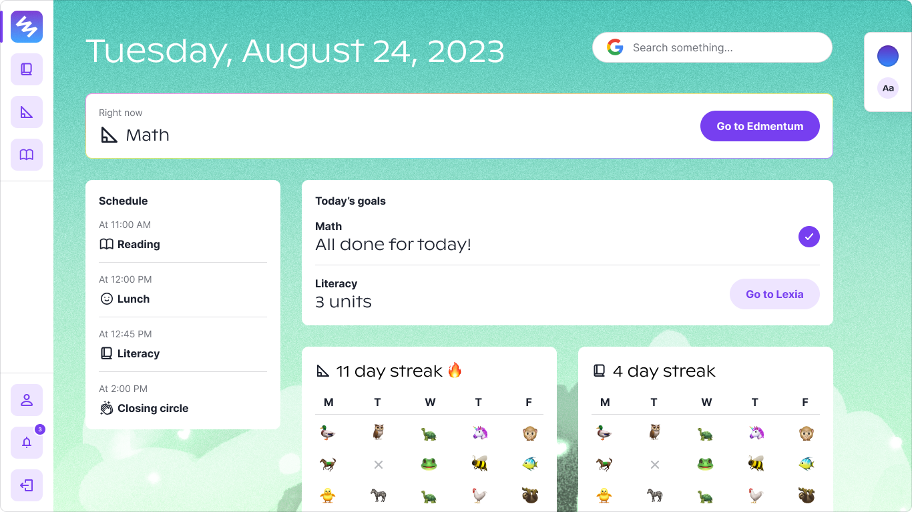

Primer, 2023
Primer is creating a new way to school and that means there are unique needs. We needed a student information system (a platform that manages student data, grades, roster, etc.), that did more than just student data. We needed a system that supported the whole school community: students, educators, and families. After researching different SIS (and even going on a few calls with sales representatives), we found that nothing quite solved our use case. Many of them were also outdated and clunky. So we made our own!
Case study not available to the public. Contact for more information.
